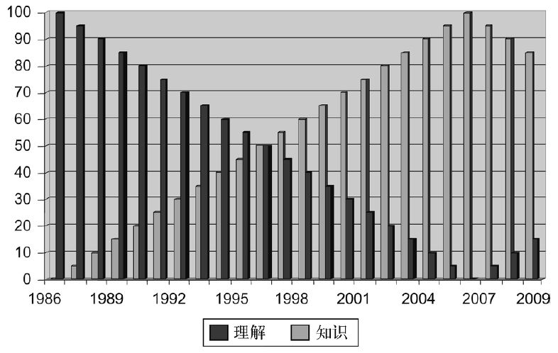

领导力是什么？这么说吧，在对领导力苦思冥想了近3000年，又潜心“钻研”了一个多世纪之后，我们似乎还远未就其基本含义达成共识，遑论其可否传授，抑或其效果能否衡量和预测。之所以如此，不可能是因为缺乏兴趣或资料：2003年10月29日这一天，在英国亚马逊网上出售的“领导力”相关书籍就多达14139种。短短六年后，该数字又增加了将近三倍，达到53121种——清楚地表明在未来很短时间内，有关领导力的书籍种数将超过阅读它们的人数。你多半会觉得信息增加必然意味着理解深化，这是人之常情。然而很遗憾，与我们开始出版这么多资料之前相比，如今人们对于何为领导力的理解更是差之千里，看似与其定义的“真知”渐行渐远。此言不虚，图1就展示了我本人研读过的相关文献。我在1986年前后开始阅读领导力文献时，就已经在不同的领导岗位上工作过一段时间了，所以那时我虽然所读甚少，但已经从生活这所大学中学到了关于该主题的一切。后来我读的资料越来越多，才意识到自己此前所知的“真理”全都是沙上筑塔，因此随着知识的增加，我的理解反而退化了。2006年最是艰难，我阅读了数百部乃至上千部著述，最终却证明了苏格拉底的说法——智慧的唯一源泉，乃是体味到自己的无知。我觉得我目前正在逐渐恢复，总算扎实地确定了这样一个结论：在其最根本的意义上，作为个体领导者，领导力的所谓“精华”遗漏了追随者，而没有追随者，任何人都不可能成为领导者。的确，不妨将此作为领导力的最简单的定义：“有人追随。”

图1 领导力：知识与理解
那么我们当如何考察这一课题呢？为领导力下定义之所以重要，不光是要在文字游戏中为它界定一个空间，也不仅仅是一个诡辩游戏；确实，我们不需要就定义达成共识（虽然各个组织内部或许应该如此），但我们至少应该能够理解彼此的立场，以便在论战中知己知彼。毕竟，如何定义领导力，对于组织的运作或者不运作的方式及其奖惩对象，都有着至关重要的意义。逾50年前，W.B.加利 [1] 称权力是一个“本质上存在争议的概念”。加利指出，许多概念，例如权力，都存在“使用者应如何正确使用它们的无穷争议”，以至于争议似乎无法解决。例如，要讨论布什或布莱尔是不是“好的”领导者，恐怕众说纷纭，难以定夺，由于辩论各方对于何为“好的”领导者的定义不同，达成共识的希望极其渺茫。
所以我们无须就定义达成一致，但需要知道那些定义各是什么。首先不妨考察一下最流行的书籍中关于此事有何说法。许多这类书籍都建立在自传或传记类叙述的基础上，这样就把领导力和被视为领导者的个人 关联起来。还有些将领导力定义为一个过程 ——或许是领导者所采纳的风格，或许是“意义建构”之类的过程（韦克 [2] 的说法，即“使未被充分理解且相互矛盾的信息变得合理的过程”），又或者是领导者的具体实践。有些在定义领导力时只考察有权之人的所作所为——一种从地位 角度切入的方法。其定义往往与权力的定义密不可分，汲取了韦伯和达尔 [3] 的原创思想，即权力（因而领导力也是如此）是迫使他人违背自身意愿做某事的能力。这一视角往往将领导力锁定为动员某个群体或社会共同实现某种目的——是一种从结果 角度切入的方法。本书后文中还会谈到这些方法中的某一些，但除了标示这些定义的不同属性之外，它们非但未能拨云见日，反令我们如堕雾里。看来对领导力的定义的确见仁见智，且即便这些定义有相似之处，却也过于复杂，让大多数试图解释何以存在差别的人无从下手。不过分歧似乎是围绕着四个争议领域展开的，它们分别将领导力定义为地位 、个人 、结果 和过程 。
这一四重分类法并未声称自己无所不包，不过它应该囊括了我们对领导力的大部分定义。此外，这一分类法也没有高下之分：它并未声称某一个定义比另一个更重要，而且与共识视角相反，它赖以建构的基础是可以 互不相容的。事实上，我们或许不得不选定当前讨论的是哪一种领导力形式，而不是试图无视差异的存在。不过，领导力的经验实例很有可能会包含上述四种形式的元素。如此一来，我们就有了四个主要选项：
所有这些都是“理想型”，根据韦伯的主张，“真实的”实证案例或许根本不会以任何纯粹的形式存在，但这确实帮我们更好地理解了领导力这一现象，以及与之相伴的千头万绪、盘根错节——因为对不同的人来说，领导力的意义截然不同。因此，这是一个探索模式，是为世界建构意义的注重实效的尝试，而非试图将世界划分成多个“客观”的片段，让它们分别映射我们所认定的现实。在考察了上述四种不同的领导力研究视角之后，我会指出，正因为存在这些差异，人们迄今很难就领导力的定义达成一致意见，也正是因为这些差异，这一模式对领导力的执行和分析至关重要。
传统观念认为，领导力与组织中的某一个空间位置有关——有些是正式的，有些是非正式的。因此，我们可以把领导力定义为处在某个垂直——通常是正式的——等级结构中，某一地位的人所从事的活动，该地位给予他们领导他人所需的资源。这些人“居于我们之上”、“高人一等”，是“上级”，等等。事实上，他们显示出我们所谓“主管领导”的特质。我们通常就是这样看待垂直等级结构中的首脑的，不管是CEO（首席执行官），还是军事将领，还是校长或其同类。这些人领导的方式是通过自己的地位对庞大的下级网络实施管控，任何必要的变革往往都是顶层驱动的。该“驱动力”的存在还暗示着组织运作的机制假设，以及主管们所拥有的强制力量：将军可以下令行刑，法官可以监禁他人，CEO可以处罚乃至解雇员工，如此等等。
这一垂直架构的一个相关方面是表面看来平行的权力和责任架构。既然领导者是“主管”，那么按道理，他或她能够确保自己的意愿得以执行。但虽说正式的领导者可以命令 下级服从——且通常之所以能够如此，原因之一就是资源的不平衡——这种服从却从来不是铁板钉钉的。事实上，可以说权力本身就涵盖一种与事实相悖的可能性，是一个虚拟动词语态而不仅仅是动词——它可能会走向反面。的确，完全可以说，权力与其说是造成服从行为的原因，不如说是它的结果：当且仅当下属服从领导者的命令时，领导者才是有权力的。如若不然，我们就无法解释哗变——只有当下属有能力说“不”，也有勇气承担后果时，这种军事等级结构中的反抗行为才有可能发生。
当我们进而考察带头领导时，这种将领导力限定为垂直等级结构内部某一地位的做法也会暴露出其局限性，带头领导是一种水平视角，其领导力在很大程度上与垂直等级无关，而通常是通过某个网络或某种动态分层结构（灵活而流动的等级结构）形成的非正式体系。“带头”领导可能表现为好几种形式，其与主管领导的结合点可能出现在某个等级结构底端的次末级。例如，在军队中，这样的领导可能出现在下士一级，他们有一定程度的正式权限，但可以通过身先士卒的方式来确保自己在普通士兵（他们的追随者）中的地位。的确，对军队的成功而言，基层领导的领导能力可能非常关键。这么说吧，有句老话说军士是“军队的中流砥柱”，还是很有道理的。
不过更常见的情况是，我们会通过某个时尚先锋——这是走在追随者“前头”的人，无论是服装、音乐、文化、商业模式，还是别的什么时尚——来考察带头领导。这些领导者在不拥有任何正式权限的情况下，为大批时尚追随者引领潮流。但带头领导也包括指点迷津之人，既有为人带路的专业向导，也有在某次周日漫步中，知道如何通过最佳路线带领一群朋友到达某个共同目的地的随便什么人。两种指路人都通过在前方带路的角色而展示了领导力，但两者都未必是某个正式等级结构中的正规设置。为解释这一方面的含义，我们甚至可以追溯到英语中“leadership”一词的词源。英语中“leadership”一词最初的几个词源分别是古德语“Lidan ”，意为“走”；古英语“Lithan ”，意为旅行；以及古挪威语“Leid ”，意为寻找航海路线。
带头领导的另一层意义，是将某个原本被禁止的行为合法化。例如，不妨考察一下希特勒公然公开的反犹主义言行如何让追随者们的反犹主义宣言变得正当合法了。此外已经有人指出，诸如自杀之类的做法或涂鸦之类的反社会行为，因为“带头领导”的“许可”而令其他人争相效法，因此这类行为往往会快速泛滥，社会行为近乎变成了某种瘟疫。
如此说来，这一地位层面的领导力会因其正式或非正式架构的程度，以及垂直或水平构成的方式而异。主管领导暗指资源和权限在某种程度上被集中起来，而在某些情况下，带头领导或许暗指更接近于没有权限的领导。然而这是否表明，相对于领导者所处的地位而言，领导者的性格与领导力并没有那么息息相关呢？
是不是你的个性决定了你能否成为一个领导者？当然，这呼应了传统的特质观念：某领导者的性格或特性。作为这一观念的最佳范例，不妨想想那些人格力量超凡、追随者完全是因为其个人“魅力”而不离不弃的领袖们。讽刺的是，虽然我们付出了极大努力来将理想的领导者简化为他或她的基本特性，诸如该领袖的基本性格特征、能力或行为，但简化本身同时也贬低了其价值。这个过程很像是一位研究领导力的科学家变成了厨子，忙着把某一位著名领导者的基本特性放在平底锅上煎炒烹炸，从而把该领导者简化为一串基本特性。最后再把烹饪过程剩下的残余物取样分析，把具体的物质分解成不同的化合物。然而悖论是，虽说某些化学残余确有此效力（比方说，人们往往认为海洛因是把他人“带入”歧途的罪魁祸首），对“领导力是什么”的问题却未予解释，因为脱离了追随者或具体背景来分析领导者不啻是缘木求鱼。
另一个互补或相反的论点是将领导力大致定义为集体的而非个体的现象。根据这一观点，关注点通常会从某一个体正式领导者转向多位非正式的领导者。比方说，不妨考察一下组织事实上是如何取得成就的，而不是过于关注CEO说组织应该取得怎样的成就。这样一来，我们就能追踪非正式的意见领袖所发挥的作用，看他们如何说服同事们求同存异、大干快上或消极怠工，诸如此类。本书第七章会回过头来考察这个问题。
无论如何，以这一标准界定的领导力基本上是根据哪一个或哪一些人是（正式和非正式的）领导者来定义的，这样一种观点或许与领导者及其追随者之间，或各个领导者之间的情感关系有关。最为极端的情况是，这种情感关系会让“人群”中的追随者们无法鉴别正义与邪恶的行为。
虽说西方人总是迷信英雄主义个人，将其视为领导偶像，我们却完全不清楚这样的例子能否脱离社会单独存在。例如，牛顿或许可以声称自己“领导了”万有引力的发现，但事实上那是牛顿与罗伯特·胡克 [4] 和埃德蒙·哈雷 [5] 共同努力的结果。或许还应在这里对作为手段和作为目的的领导力加以区分。举例来说，流水线是工人们被“领导”进行劳动的手段 ，但最终的目的 并非由机器发起，而是由存在但隐形的领导者（们）建构的。那么，领导力的目的——结果——到底有多重要呢？
基于结果来考察领导力或许更合适一些，因为没有结果——领导力的目的——便没有多少支持性证据。“有潜力”成为伟大领导者的人或许成千上万，但如果没有机会发挥潜力，如果该领导力没有产生直接的成果，那么逻辑上就很难称这些人为“领导者”，除非是在谈及“失败的”或“理论上的”领导者——也就是事实上没有多大成就的人。另一方面，有一种倾向认为，结果既是领导力的首要标准，也应该归功于领导者：例如，既然公司利润增加了200%——这是公司的首要目的——我们就应该对领导者给予适当的奖励。但这里还有另外两个问题需要深入考察。第一，我们为什么、又如何能把一个组织的集体成果归功于个体领导者的行为？第二，假设我们可以通过因果关系把二者联系在一起，为实现那些成果所使用的方法能否在任何程度上决定领导力的存在？
第一个问题，即把成果的源头追溯至个体领导者的行为，存在巨大争议。一方面，好几个从心理学出发的领导力研究表明，领导者所起的作用是可以衡量的，但更倾向于社会学的作者往往会否定这类衡量方法的有效性。因此我们或许有明显的成功或失败的证据，也知道当时的领导者是谁，却很少能断然声称该领导者的行为直接导致了这样的结果（见罗森茨魏希关于该问题的研究，列于延伸阅读 [6] 部分）。更为常见的情况是，还有大量的人和过程横亘于领导者与最终结果之间。那么你或许会问，为什么我们在追责时一般都会把目标锁定在领导者身上呢？法国社会学家埃米尔·涂尔干在19世纪末20世纪初写道，追随者们事实上希望其领导者像神一样行使权力。这给了追随者两个各自独立但彼此相关的好处：第一，所有艰难决策的责任都可以落在领导者肩上（这也就能够解释为什么领导者与追随者得到的奖励存在巨大差异了）；第二，当（事实发生而非假设）该领导者失败了，追随者们可以让他或她做替罪羊，为自己洗脱责任。反对基于结果的领导力，特别是反对“伟人”领导的结果的最极端例子，出现在托尔斯泰的《战争与和平》中，他把领导者比作行船划开的船头波——总是出现在船的前方，理论上引导着船的前进，但事实上它并没有引导，而只是受到了船（组织）本身的推动而已。
这又把我们引向了基于结果的领导力的第二个核心问题——实现结果所历经的过程有无任何实际作用？毫无疑问，办公室或学校里的霸凌者如果能成功地“怂恿”追随者们慑于惩罚的威胁而服从其命令，那么根据基于结果的标准，此人就是一个领导者——前提是其强迫行为必须成功有效。然而这样一个基于结果的研究领导力的方法就和某些观点产生了直接的矛盾，后者认为领导者之所以与众不同，依据就是领导力——据称是非强迫性的——与我们认定为“霸凌”或“专横”等等的所有其他活动形式之间，存在着某种推定的差异。领导力的大多数方面的确使用了可能被某些人，特别是服从之人认定为强迫性的动员策略。因此宗教领袖或许认为他或她的行为只不过是在向追随者揭示真理——追随者可以自愿选择是否听信。然而如果追随者坚信不遵守那些宗教信条就会让他们永堕地狱之火而万劫不复，那么他们或许会认为这也是强迫性的。同样，雇主可能也并不觉得雇佣合同是强迫性的，因为双方都是自愿签订合同，但如果雇员觉得未能按照要求的水平完成工作就会导致其被“炒鱿鱼”——与之相伴，还要备受羞辱、歧视和贫穷之苦——那么他或她也可能认定该合同是强迫性的。纵然如此，对于那些认为领导力首先是目的性的、应专注结果的人来说，实现这些结果的过程，甚或领导者是否应对这些结果负责，可能都无关紧要了。
当然，基于结果的领导力未必局限于专制独裁或无良邪恶的领导者；相反，那些极为现实的、或许显然没有什么领袖魅力，但做事效率极高之人也会显示出这一特征。他们所做的大量工作往往得不到多少关注，但对组织的运转至关重要，这种形式的领导力可能会吸引追随者的兴趣，但不会与后者建立情感关系。
就这一点而言，一个特别有说服力的例子是本杰明·富兰克林，他早期的成功似乎并非因为明确宣讲了某个令人振奋的远景目标，他也没有激发起追随者的情绪，让他们超越个人利益为大众谋福利。相反，富兰克林的实用主义领导力根植于他总是能够为悬而未决的问题找到现实的解决方案，从而吸引了他人的兴趣而非激发了他们的情感。然而那些被富兰克林动员起来的人并非像某些领导力交易理论所理解的那样，只是跟他做了一笔交易。原因在于，举例来说，在鼓动费城建立警察局、开设医院、发行纸币、铺设人行道、发展照明和设置志愿消防部门等等的过程中，富兰克林的领导技能体现在说服同事们解决他们自己面对的现实问题上。这里很重要的一点是，富兰克林有没有显示出领导力，因为虽然结果很明显，确保那些结果实现的那只手却是看不见的。事实上，如果富兰克林在事业开展不久便英年早逝了，那么大部分这类不公开的联系活动可能根本不会公之于世，人们也就不会认为他是个伟大的领导者。
因此，基于结果的领导力既可以体现在领袖魅力极为突出的个人身上，也可以体现在几乎完全隐形的“社会工程师”身上；此外，它还体现在各种方法上，既包括实现的目标、获取的成果所指的“我们取得了哪些成就”，也包括“我们来这里做什么”这样一种关注目的或身份的哲学，后文还会谈到这种哲学。不过正如上文所指出的，并非每个人都认为最重要的是结果而非方法；那么，关注领导力得以体现的过程能否提供一个全然不同的视角呢？
有一种假说认为，我们为之贴上“领导者”标签的那些人跟非领导者的行事风格全然不同——有些人“做事有领导风范”——但这是什么意思呢？它可能是说当时的背景至关重要，也可能是说领导者必须做出表率，或者这一差异属性在个体生活的早期阶段就已初露端倪，所以我们才会在学校的操场或运动场上看到有些孩子是“天生”的领导者。然而这一“过程”差异到底是什么呢？领导者就是据称能避免任何虚伪之嫌，做出我们所需要的表率的人吗？当有必要做出牺牲，或者追随者又要求新的行为模式时，作为众人表率的领导者是不是最成功的？
或许如此，但考虑一下与这一理想型相悖的两个反例。第一个是，不管能否做出表率，军士长往往都有追随者。我们或许可以争辩说那些在练兵场上对士兵大吼大叫以势压人的军士长并非“真正的”领导者，但如果他们的领导过程确实培养了训练有素的士兵，我们能否据此推论说，因为军队是建立在强迫机制之上的，那里不可能展现出领导力？抑或所谓的合理领导过程取决于局部文化？也就是说，士兵本该被强迫，他们很可能不会认可其军士长或军官们通过“领导力”这样的平等主义辩论而达成共识的尝试？
第二个反例是海军上将纳尔逊 [7] ，此人在军事上的丰功伟绩几乎永远建立在悖论情境之中，即他要求下属绝对服从海军的规章制度，但他本人却违反了同一规章制度中的几乎每一项条款。然而纳尔逊的成功并非只是因为他屡犯军规，还因为他吸引并动员了追随者，尤其是他战舰上的那些下属军官们，也就是他的“兄弟连”。因此在某一层面上，这一过程方法或许能够囊括为动员追随者所使用的具体技能和资源：雄辩强据、施展威风、拉拢贿赂、身先士卒、骁勇善战，如此等等。在这一外表掩盖下的领导力必然是一个关系概念而非占有概念。换句话说，如果下属拒不服从，你是否觉得自己拥有高超的过程技巧就无关紧要了。这么说来，我们或许可以通过区分领导者和追随者的行为过程来识别领导力，但这并不意味着只需罗列出那些放之四海而皆准的过程就万事大吉。毕竟，不能指望一位公元2世纪的罗马领导者跟公元21世纪的意大利政治家的行事作风完全一致（虽然这也不无可能），不过说到底，我们关于领导力的大部分假设仍然跟我们自己而非他人的文化语境有关——情况之复杂，无异于打开了潘多拉的盒子，根本无法在这样一部通识读本中充分展开（见楚卡尔等，列于延伸阅读部分）。
诚然，关于领导力过程的很多论述或许都围绕着“伟人”的行为展开，但长期以来，关于男人和女人的领导风格是否相同，或者他们的领导方式是否受到了各自性别的基因和文化影响，一直是个很大的争议焦点。虽然托马斯·卡莱尔笔下英雄主义的“男人”们解决 了其追随者的问题（见第三和第四章），但可能与领导力真正相关的，还是让追随者勇敢地承担起自己的责任。的确，对大多数人而言领导力或许跟任何形式的英雄主义没有多大关系，而更是“平凡”得多的日常实践的结果，人们通过这些实践来建立和强化社会关系并进而建立和强化社会资本，不过“平凡”这一标签低估了行使这些微妙行为所需的技能和精度，因为它们都是一丝不苟地精心架构的。确实，在我们中间那些无法复制这类行为的人看来，它们似乎更像是魔术师秘而不宣的技巧——看似简单，却无法解释。因此，建立起组织运行所需的网络的人，正是那些勤勉的领导者，他们会隔三岔五地关怀追随者家人的健康状况，会始终强调追随者要跟上组织的发展方向和他们的工作进度，等等。
于是，你在自己的简历中打钩标记出来多少种领导能力，并不能证明你是个成功的领导者，因为这些必然都是脱离情境脉络的。打个比方，如果在你要施展领导力的地方不需要任何公开演讲职能，那么你有再高超的公开演讲水平，又有什么用呢？如此说来，从本质上说，胜任素质往往与个体有关——而领导力必然是一种关系现象：没有追随者，就没有领导者，不管你拥有多少“个人”胜任素质。相反，不妨考察一下领导力“实践”的重要性——不是领导者“拥有”什么，而是他们“做了”什么。然而领导者是否也会参与那些不被视为领导力的活动呢？下一章我们就来探讨这个问题。